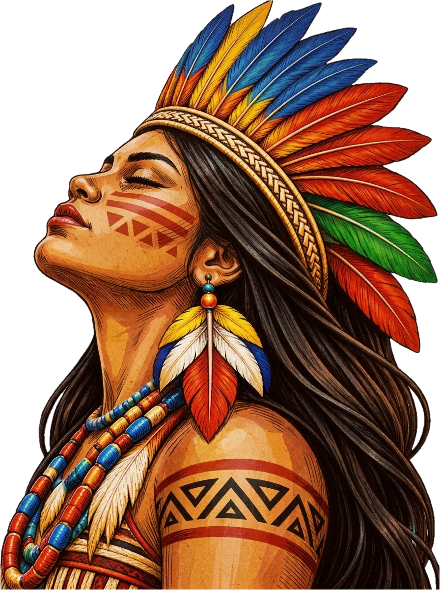
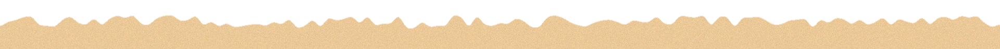

Sateré-Mawé
A autodefinição como “filhos do guaraná” está ligada à história do waranã. Os Sateré-Mawé desenvolveram seu cultivo e beneficiamento, centrais em sua vida cultural e social.
Instituto Socioambiental (ISA)Ver fonteHistórias de resistência, saberes ancestrais, dores e lutas de povos que mantêm vivas suas culturas, territórios e modos de vida.


Conheça saberes, tradições e modos de vida de diferentes povos do Brasil. Cada cartão traz links para as fontes consultadas.
Os textos apresentam aspectos específicos de cada povo; não representam todas as comunidades indígenas. As imagens são ilustrações representativas, não registros documentais.
A autodefinição como “filhos do guaraná” está ligada à história do waranã. Os Sateré-Mawé desenvolveram seu cultivo e beneficiamento, centrais em sua vida cultural e social.
Instituto Socioambiental (ISA)Ver fonte
Máscaras, pinturas em entrecascas, cestaria, cerâmica, música e histórias compõem a produção artística Ticuna. A diversidade dessas expressões afirma identidade e resistência.
Instituto Socioambiental (ISA)Ver fonte
No território do Rio Içana e do Alto Rio Negro, a cestaria Baniwa de arumã reúne técnicas de trançado e desenhos próprios, além de fazer parte das trocas na região.
Instituto Socioambiental (ISA)Ver fonte
Para os Yanomami, urihi, a terra-floresta, é viva e ligada à alimentação, aos remédios e às relações espirituais. Proteger o território é essencial à continuidade de seus modos de vida.
Espaço de vida, cultura e autonomia dos povos.
Saberes, histórias e identidades que atravessam gerações.
Lutas por proteção, saúde, educação e dignidade.